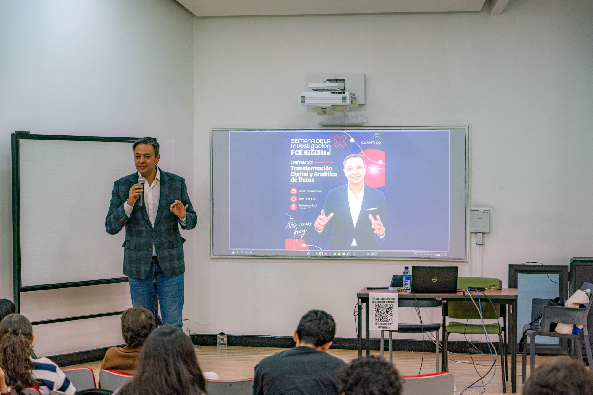
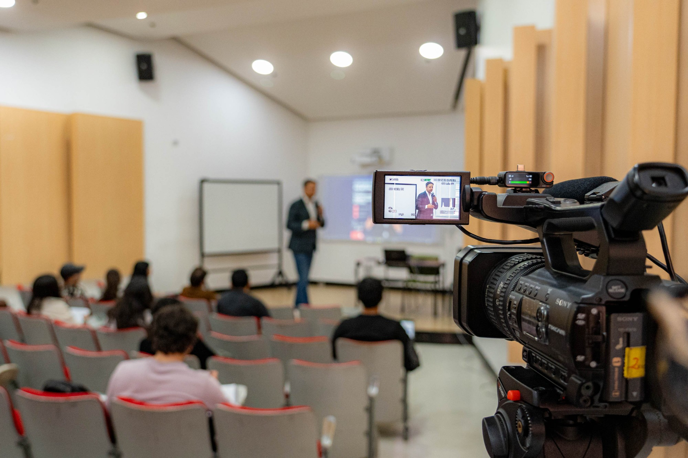
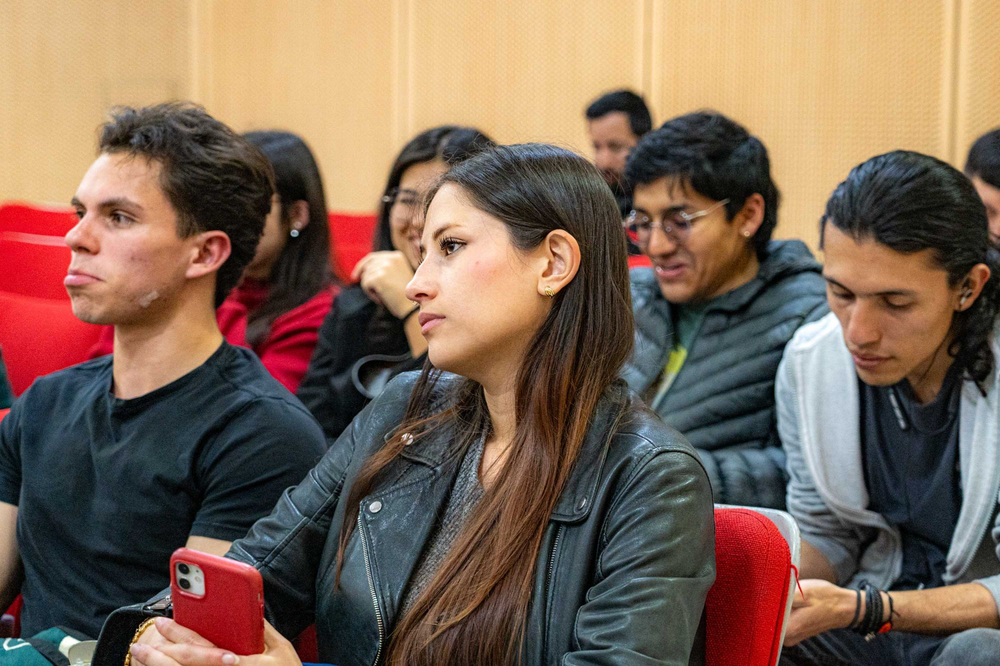
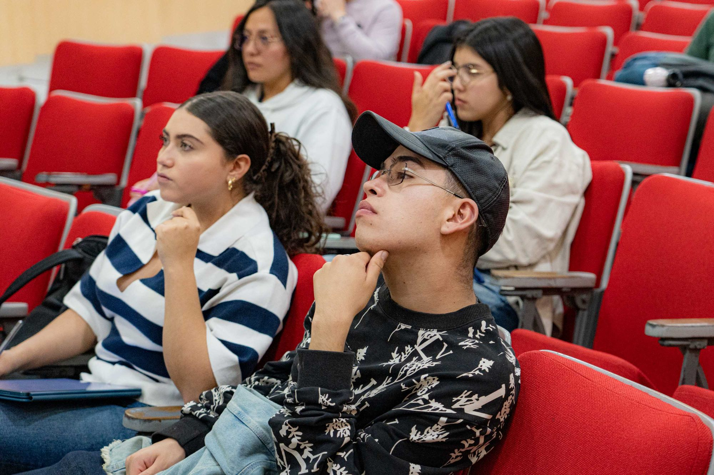
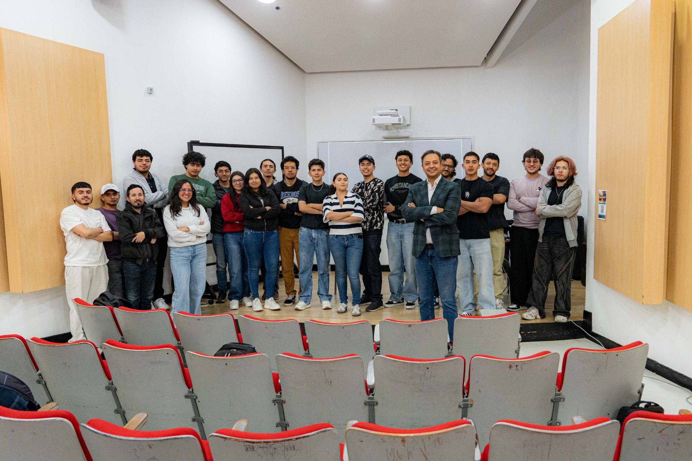
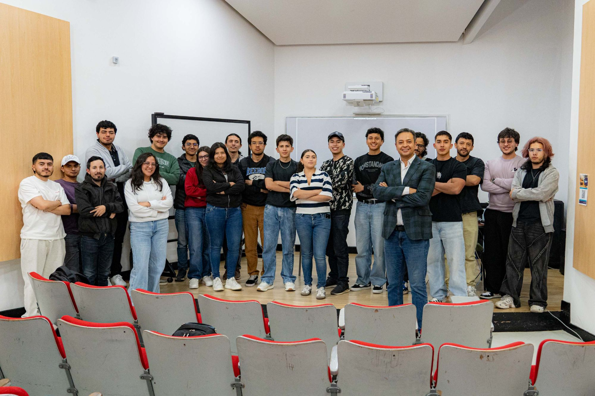

X Semana de la Investigación FCE 2026
Conferencia Entrada libre Evento finalizado
Automatización, IA y la próxima generación de plataformas públicas en Colombia
De automatizar trámites a construir Inteligencia Artificial
Una mirada práctica con casos reales y el futuro sobre la transformación digital del sector público.
Daniel Medina Salcedo
CEO de Cuántico y exCEO de Olimpia IT
Fecha
Jueves 17 de septiembre de 2026
Hora
4:00 – 6:00 p. m.
Lugar
Auditorio auxiliar 2, Edificio 310
Incluye
Refrigerio
Certificado de participación
Espacio de preguntas
Este evento ya se realizó
Gracias a quienes nos acompañaron. Las inscripciones están cerradas; mira abajo algunos momentos de la jornada.
Así se vivió la conferencia





